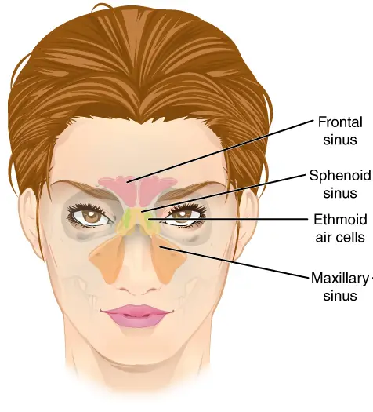
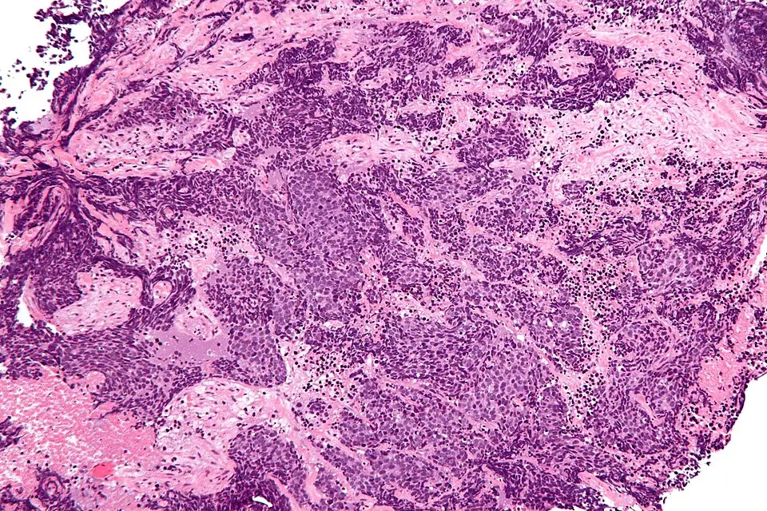

DX.10 — Tumeur maligne nasosinusienne
Une obstruction nasale unilatérale qui saigne et persiste plus de trois semaines doit faire penser à une tumeur maligne nasosinusienne, rare mais souvent découverte tardS1S5. Le médecin de famille adresse alors le patient à l’oto-rhino-laryngologiste (ORL) pour une endoscopie, puis l’imagerie précède la biopsie et la décision d’un centre spécialiséS5S2.
Ce cours sur la tumeur maligne nasosinusienne reprend les sources citées ; il n’a pas été validé cliniquement par un médecin.
1. Définition
La tumeur maligne nasosinusienne est un cancer qui naît principalement de la muqueuse tapissant la cavité nasale et les sinus paranasauxS1. Elle regroupe plusieurs types histologiques, surtout épithéliaux, dont le carcinome épidermoïde et l’adénocarcinome forment les deux principauxS5.
2. Épidémiologie (Suisse, puis Europe)
Selon le Centre hospitalier universitaire vaudois (CHUV), ces tumeurs représentent moins de 1 % de tous les cancers et 3 % des cancers des voies aérodigestives supérieuresS1. La recommandation européenne de l’ESMO (European Society for Medical Oncology) et d’EURACAN (réseau européen des cancers solides rares de l’adulte) indique une incidence standardisée inférieure à 10 par millionS5. Les chiffres utiles rassemblent fréquence, âge, sexe et survie, tandis que la répartition histologique précise les sous-types qui guident le traitementS1S5.
Chiffres utiles : Suisse, puis Europe
| Donnée | Valeur | Population, lieu, date | Source |
|---|---|---|---|
| Part de tous les cancers | < 1 % | Suisse romande, CHUV | S1 |
| Part des cancers des voies aérodigestives supérieures | 3 % | CHUV | S1 |
| Cancers professionnels reconnus par an | > 150 cas, surtout des mésothéliomes | Suisse, Suva | S4 |
| Incidence standardisée | < 10 par million (hommes 5–9, femmes 2–5) | Données mondiales, ESMO–EURACAN 2025 | S5 |
| Part des cancers de la tête et du cou | < 5 % | ESMO–EURACAN 2025 | S5 |
| Rapport hommes / femmes | 1,3 (Norvège) à 2,5 (Italie, Finlande) | Europe | S5 |
| Âge | La plupart des patients ont ≥ 65 ans | Monde, sauf Asie de l’Est | S5 |
| Survie relative à 5 ans, carcinome épidermoïde | 50 % | Diagnostics 2000–2007 | S5 |
| Survie relative de l’adénocarcinome | 63,1 % à 5 ans, 47,8 % à 10 ans, 36,6 % à 15 ans | Diagnostics 1973–2009 | S5 |
| Survie globale à 5 ans dans une grande série | 72,7 % ; survie sans récidive 66,4 % | Cohortes de 940 et 420 patients | S5 |
| Tendance aux Pays-Bas | Baisse de l’adénocarcinome chez l’homme, hausse du carcinome épidermoïde chez la femme | Pays-Bas | S5 |
| Tendance 1970–2010 | Baisse d’incidence en Finlande, en Angleterre, aux Pays-Bas et en Norvège (hommes) | Europe et autres pays | S5 |
La rareté explique le retard diagnostique, car le médecin de famille ne rencontre qu’exceptionnellement ce cancer au milieu de nombreuses rhinites et sinusitesS1S5. La survie relative s’améliore depuis 2010 en Europe, mais elle reste la plus basse dans les pays d’Europe de l’EstS5.
ESMO–EURACAN attribue la baisse néerlandaise de l’adénocarcinome aux mesures de prévention et à la diminution des métiers exposés, et la hausse féminine du carcinome épidermoïde à l’évolution du tabagismeS5.
Répartition histologique et localisation
| Élément | Donnée | Portée clinique | Source |
|---|---|---|---|
| Sous-types épithéliaux | 80 % des tumeurs malignes | Groupe majoritaire | S5 |
| Carcinome épidermoïde | 50–75 % des tumeurs nasosinusiennes | Type le plus fréquent quel que soit le site | S5 |
| Papillomavirus (HPV) à haut risque | 35–50 % des carcinomes épidermoïdes non kératinisants | Sous-type lié au virus | S5 |
| Adénocarcinome | Deuxième type, surtout ethmoïdal et maxillaire | Lien avec les poussières professionnelles | S5 |
| Site le plus fréquent | Cavité nasale, puis sinus maxillaire, ethmoïdal, sphénoïdal et frontal | Ordre décroissant | S5 |
| Carcinome indifférencié (SNUC) | Tumeur de haut grade, diagnostic d’exclusion | Chimiothérapie première discutée | S5 |
| Papillome inversé | Carcinome épidermoïde synchrone ou métachrone possible | Lésion bénigne à surveiller | S5 |
Le papillomavirus humain (HPV) intervient dans plusieurs sous-types, le type 33 dans le carcinome multiphénotypique et les types 16 et 18 dans le carcinome non kératinisantS5.
3. Physiopathologie
La plupart des facteurs de risque connus sont des substances inhalées au travail, en particulier pour l’adénocarcinome, alors que le tabac favorise surtout le carcinome épidermoïdeS5. La Suva, assurance suisse contre les accidents et les maladies professionnelles, signale un risque accru chez les personnes qui inhalent souvent des poussières de hêtre, de chêne ou de certains bois tropicauxS3. Les facteurs de risque croisent les sources suisses et européennes, et chacun appelle une question d’anamnèse préciseS1S3S5.
Facteurs de risque : Suisse, puis Europe
| Facteur | Type histologique surtout concerné | Question à poser | Source |
|---|---|---|---|
| Poussières de bois (hêtre, chêne, bois tropicaux) | Adénocarcinome | Avez-vous travaillé le bois, poncé ou fraisé ? | S3S5 |
| Cuir, textile | Adénocarcinome | Avez-vous travaillé le cuir ou le textile ? | S1S5 |
| Farine, nickel, chrome | Adénocarcinome | Quels métiers avez-vous exercés ? | S5 |
| Formaldéhyde | Non précisé | Avez-vous manipulé des produits volatils ? | S1 |
| Tabagisme actif et passif | Carcinome épidermoïde | Fumez-vous, ou avez-vous été exposé ? | S1S5 |
| Pollution de l’air | Non précisé | Où vivez-vous et travaillez-vous ? | S1 |
| Papillomavirus humain | Carcinome non kératinisant | Aucune question fiable : l’histologie tranche | S1S5 |
La Suva fixe la valeur limite d’exposition aux postes de travail (VME) des poussières de bois à 2 milligrammes par mètre cube, que le ponçage et le fraisage dépassent souvent sans aspirationS3. Elle note aussi que ces cancers professionnels du nez surviennent aujourd’hui plutôt rarement, ce qui reflète l’effet des mesures de protectionS4.
La tumeur s’étend d’abord localement, vers l’orbite, la base du crâne, la fosse infratemporale et le long des nerfs, avant de toucher les ganglionsS5. Les voies d’extension relient chaque voie à son signe clinique et à son poids dans la classification TNM (tumeur, ganglion, métastase)S5S1S2.
Voies d’extension et signes associés
| Voie | Signe clinique | Conséquence | Source |
|---|---|---|---|
| Fosse nasale | Obstruction, écoulement, saignement unilatéraux | Symptômes précoces, souvent banalisés | S1S2 |
| Orbite | Trouble visuel, œil qui coule, limitation des mouvements oculaires | Classe T3 (paroi osseuse) ou T4a (contenu orbitaire) selon la profondeur | S1S5 |
| Nerf trijumeau | Hypoesthésie de la joue | Maladie avancée, extension périneurale | S5S1 |
| Fosse infratemporale, ptérygoïdes | Difficulté à ouvrir la bouche | Classe T4a | S1S5 |
| Base du crâne, dure-mère, cerveau | Céphalées, signes neurologiques | Classe T4b | S5 |
| Ganglions rétropharyngés, puis niveaux I et II | Masse dans le cou | Atteinte ganglionnaire chez 14 % des carcinomes épidermoïdes | S5S1 |
| Métastases à distance | Poumon, foie, os | Rares au diagnostic | S5 |
Le carcinome épidermoïde atteint les ganglions dans 14 % des cas, avec des extrêmes de 4 à 27 % selon le site et l’extension localeS5.
Sinus paranasaux : où naissent les tumeurs. OpenStax College fournit ce schéma en couleurs, sous licence CC BY-SA 3.0, où chaque paire de sinus porte une teinte propreS7.

Le lecteur repère d’abord seul les sinus colorés, puis il cherche ceux qui touchent l’orbite et la cavité nasale.
La copie annotée montre cinq repères numérotés, rangés selon la fréquence décroissante des sites tumoraux d’après l’ESMO.
- 1. Le repère 1 montre la cavité nasale, site le plus fréquent des tumeurs malignes nasosinusiennesS7S5.
- 2. Le repère 2 montre le sinus maxillaire, deuxième site, dont la tumeur peut gagner la bouche ou la joueS7S5.
- 3. Le repère 3 montre les cellules ethmoïdales, siège typique de l’adénocarcinome lié au bois, au contact direct de l’orbiteS7S5.
- 4. Le repère 4 montre le sinus frontal, site le plus rare, au contact de la base du crâne antérieureS7S5.
- 5. Le repère 5 montre l’orbite, dont l’envahissement fait discuter une exentération et change la classe tumoraleS7S5.
Ce que l’image décide. Le schéma rappelle que l’ethmoïde et le sinus maxillaire bordent l’orbite, ce qui explique pourquoi un trouble visuel signe souvent une maladie avancéeS5.
4. Démarche diagnostique
La démarche part d’un symptôme banal mais unilatéral et persistant, puis elle mène sans délai à l’endoscopie, à l’imagerie, à la biopsie et au comité pluridisciplinaireS5S6. Les étapes chiffrées précisent pour chacune le déclencheur, l’examen et la décision qui en résulteS5S6S2.
Démarche diagnostique en cinq étapes
| Étape | Déclencheur | Examen | Décision | Source |
|---|---|---|---|---|
| 1. Suspecter | Obstruction, écoulement ou saignement unilatéral, douleur faciale ou dentaire | Anamnèse d’exposition | Traitement médical bref ou orientation | S5S1 |
| 2. Ne pas attendre | Symptômes ≥ 3 semaines, ou persistance après un traitement de 3 semaines au plus | Examen ORL complet avec endoscopie nasale | Orientation rapide vers l’ORL | S5 |
| 3. Cartographier | Masse visible à l’endoscopie | Imagerie par résonance magnétique (IRM) ou tomodensitométrie (TDM), avant la biopsie | Extension locale et ganglionnaire | S5 |
| 4. Prouver | Lésion cartographiée | Biopsie transnasale sous endoscopie, immunohistochimie, biologie moléculaire | Type histologique et grade | S5S2 |
| 5. Classer et décider | Histologie confirmée | Classification TNM de l’Union internationale contre le cancer (UICC), 8e édition ; tomographie par émission de positons (TEP) pour les hauts grades | Décision en comité pluridisciplinaire | S5 |
Le document européen EPOS (European Position Paper on Rhinosinusitis) 2020 classe les symptômes unilatéraux, le saignement, les croûtes et la cacosmie parmi les alarmesS6. Le médecin de famille dispose ainsi de deux règles concordantes, l’une oncologique et l’autre rhinologique, qui ne tolèrent pas l’attenteS5S6.
Le diagnostic différentiel reste large, car les mêmes symptômes accompagnent les polypes, la sinusite ou un corps étrangerS1S5. Le tableau différentiel rassemble les diagnostics voisins du lot et les éléments qui doivent faire douter d’une cause bénigneS1S2S5S6.
Diagnostic différentiel ciblé
| Diagnostic | Ressemblance | Élément qui fait douter du bénin | Source |
|---|---|---|---|
| Rhinosinusite chronique avec polypes (DX.7) | Obstruction, écoulement, anosmie | Atteinte unilatérale, saignement, croûtes | S6 |
| Rhinosinusite chronique sans polypes (DX.6) | Obstruction, douleur faciale | Échec du traitement, symptômes unilatéraux | S6S5 |
| Rhinosinusite aiguë bactérienne (DX.5) | Écoulement purulent, douleur | Persistance au-delà de 3 semaines | S5 |
| Corps étranger (DX.8) | Écoulement unilatéral, fétide | Adulte exposé, absence d’objet | S6 |
| Papillome inversé | Masse unilatérale | Seule l’histologie distingue la lésion bénigne du carcinome associé | S5 |
| Maladie dentaire | Douleur faciale ou dentaire | Douleur persistante après soins dentaires | S5 |
Une masse unilatérale reste suspecte jusqu’au résultat histologique, qui doit être interprété par un pathologiste expérimentéS5.
5. Anamnèse ciblée et drapeaux rouges
L’anamnèse recherche la latéralité, la durée et l’exposition professionnelle, puis elle précise les signes d’une maladie déjà avancéeS1S5S3. Les questions ciblées traduisent chaque réponse en décision, du simple contrôle à l’orientation urgenteS1S2S5.
Questions ciblées et ce qu’elles décident
| Question | Réponse qui inquiète | Décision | Source |
|---|---|---|---|
| De quel côté êtes-vous bouché ? | Toujours du même côté | Endoscopie | S1S5 |
| Depuis combien de temps ? | ≥ 3 semaines malgré un traitement | Examen ORL rapide | S5 |
| Saignez-vous du nez ? | Saignements unilatéraux récidivants | Endoscopie | S2S1 |
| Quel est votre métier, actuel et passé ? | Menuisier, ébéniste, ponceur, travail du cuir | Suspicion d’adénocarcinome ; déclaration à discuter | S3S5S1 |
| Fumez-vous ? | Tabagisme actif ou passif | Facteur du carcinome épidermoïde | S1S5 |
| Votre joue est-elle insensible ? | Hypoesthésie | Extension périneurale : maladie avancée | S5S1 |
| Voyez-vous double ou moins bien ? | Diplopie, baisse visuelle, larmoiement | Atteinte orbitaire | S5S1 |
| Ouvrez-vous bien la bouche ? | Trismus | Extension vers les muscles masticateurs | S1S5 |
| Avez-vous une oreille bouchée ? | Plénitude unilatérale | Extension postérieure possible | S1 |
| Avez-vous senti une boule dans le cou ? | Masse cervicale | Bilan ganglionnaire | S1S5 |
La question professionnelle doit couvrir toute la carrière, car un métier exercé il y a longtemps peut expliquer un cancer découvert à la retraite, par déduction du rôle des expositions anciennesS3S4.
Les drapeaux rouges signalent soit une tumeur probable, soit une extension déjà avancée qui impose une prise en charge rapide en centreS5S2. Les signes d’alarme viennent des Hôpitaux universitaires de Genève (HUG), du CHUV, d’ESMO–EURACAN et d’EPOS 2020S2S1S5S6.
Signes d’alarme et signes d’extension
| Signe | Signification | Délai d’action | Source |
|---|---|---|---|
| Obstruction nasale chronique unilatérale | Symptôme précoce | Endoscopie si ≥ 3 semaines | S2S5 |
| Épistaxis récidivantes | Symptôme précoce | Endoscopie | S2S1 |
| Croûtes, cacosmie | Signe d’alarme rhinologique | Orientation immédiate | S6 |
| Hypoesthésie du visage | Stade avancé | Orientation urgente | S2S5 |
| Trouble visuel, limitation oculomotrice | Stade avancé | Orientation urgente | S2S5 |
| Déformation de la partie moyenne du visage | Effet de masse | Orientation urgente | S2 |
| Masse cervicale | Atteinte ganglionnaire | Bilan complet | S1S5 |
Les HUG décrivent ces signes tardifs comme une atteinte de la sensibilité du visage, des symptômes visuels et une déformation du visageS2.
6. Examen physique ciblé, région par région
L’examen physique cherche une masse unilatérale et mesure l’extension, en parcourant six régions toujours dans le même ordreS5S1. Chaque région est décrite dans sa fenêtre : nez, orbite, visage, bouche, oreille et couS5S1.
Région 1 — Fosses nasales
| Geste | Signe recherché | Interprétation | Source |
|---|---|---|---|
| Rhinoscopie antérieure | Masse, saignement, croûtes d’un côté | Suspicion de tumeur | S5S6 |
| Endoscopie nasale (ORL) | Siège, aspect et extension locale | Premier examen du bilan | S5 |
| Comparaison droite–gauche | Asymétrie franche | Argument contre une rhinite bilatérale banale | S6 |
L’endoscopie fibroscopique constitue la première étape du bilan, avant l’imagerie en coupes, selon ESMO–EURACANS5.
Région 2 — Orbite et vision
| Geste | Signe recherché | Interprétation | Source |
|---|---|---|---|
| Inspection | Œil qui coule, déplacement du globe | Voie lacrymale ou orbite atteinte | S1S5 |
| Motilité oculaire | Limitation des mouvements | Maladie avancée | S5 |
| Acuité visuelle | Baisse ou perte de vision | Maladie avancée | S5S1 |
Ces signes oculaires engagent aussi le suivi, car environ 75 % des patients présentent après traitement une atteinte de la fonction orbitaire ou de la visionS5.
Région 3 — Visage et nerfs crâniens
| Geste | Signe recherché | Interprétation | Source |
|---|---|---|---|
| Sensibilité de la joue | Hypoesthésie trigéminale | Extension périneurale | S5S1 |
| Inspection de la face | Déformation de la partie moyenne | Effet de masse | S2 |
| Palpation | Douleur faciale | Symptôme fréquent mais peu spécifique | S5S1 |
Une hypoesthésie de la joue chez un patient qui se dit simplement « sinusitique » doit être considérée comme une extension tumorale jusqu’à preuve du contraireS5.
Région 4 — Bouche et dents
| Geste | Signe recherché | Interprétation | Source |
|---|---|---|---|
| Ouverture buccale | Trismus | Extension vers la fosse infratemporale | S1S5 |
| Palais et vestibule | Tumeur maxillaire visible dans la bouche | Biopsie possible par voie buccale | S5 |
| Dents maxillaires | Douleur dentaire | Symptôme fréquent du cancer maxillaire | S5 |
ESMO–EURACAN admet une biopsie par la bouche seulement lorsque la tumeur du sinus maxillaire a déjà franchi la paroi vers la cavité buccaleS5.
Région 5 — Oreille
| Geste | Signe recherché | Interprétation | Source |
|---|---|---|---|
| Otoscopie | Épanchement unilatéral | Obstruction tubaire possible | S1 |
| Interrogatoire | Oreille bouchée d’un seul côté | Symptôme cité par le CHUV | S1 |
Le suivi associe souvent un audiologiste, parce que les traitements de cette région entraînent des troubles de l’auditionS5.
Région 6 — Cou
| Geste | Signe recherché | Interprétation | Source |
|---|---|---|---|
| Palpation sous-mandibulaire (niveau I) | Adénopathie | Premier relais de drainage | S5 |
| Palpation jugulo-digastrique (niveau II) | Adénopathie | Relais atteint via les ganglions rétropharyngés | S5 |
| Imagerie du cou | Ganglion rétropharyngé | Invisible à la palpation : IRM ou scanner | S5 |
Le ganglion rétropharyngé échappe à la palpation, ce qui explique que le bilan du cou repose sur l’IRM, le scanner injecté ou l’échographieS5.
7. Approche syndromique
L’approche syndromique distingue quatre tableaux, qui mesurent à la fois la probabilité de cancer et l’urgence de l’orientationS5S1S2. Le tableau des syndromes associe chaque tableau à l’examen et au délai attendusS5S1S2S6.
Quatre syndromes et leur conduite
| Syndrome | Éléments | Conduite | Source |
|---|---|---|---|
| 7.1 Obstructif et hémorragique unilatéral | Obstruction, écoulement, épistaxis d’un côté | Endoscopie ORL rapide | S5S2S6 |
| 7.2 Orbitaire | Larmoiement, diplopie, baisse visuelle, globe déplacé | Imagerie et avis ORL urgents | S5S1 |
| 7.3 Neurologique | Hypoesthésie de la joue, céphalées, trismus | Imagerie avec recherche d’extension périneurale | S5S1 |
| 7.4 Cervical | Masse du cou | Bilan ganglionnaire et endoscopie | S1S5 |
Les syndromes 7.2 à 7.4 témoignent déjà d’une maladie avancée, ce qui rappelle l’enjeu d’une orientation précoce dès le syndrome 7.1S5.
8. Diagnostic positif et critères
Le diagnostic positif repose toujours sur l’histologie, complétée par l’immunohistochimie et la biologie moléculaire, puis il se confronte à l’imagerieS5. Les critères du diagnostic précisent ce qui suffit, ce qui ne suffit pas et qui doit lire la biopsieS5.
Critères diagnostiques
| Élément | Exigence | Ce qui ne suffit pas | Source |
|---|---|---|---|
| Histologie | Biopsie avec immunohistochimie | Aspect endoscopique seul | S5 |
| Lecture | Pathologiste entraîné d’un centre à grand volume, surtout pour les hauts grades | Lecture isolée d’un cas rare | S5 |
| Biologie moléculaire | Définition du sous-type par des marqueurs tels que NUT (protéine nucléaire du testicule) ou IDH2 (isocitrate déshydrogénase 2) | Morphologie seule pour les tumeurs indifférenciées | S5 |
| Imagerie | Confirmation radiologique et cartographie | Scanner seul pour la dure-mère et le périoste | S5 |
| Classification | TNM de l’UICC, 8e édition | Description sans stade | S5 |
ESMO–EURACAN recommande un second avis histologique en centre expert, car les erreurs de diagnostic restent fréquentes et un changement de type peut modifier le traitementS5.
Le type histologique oriente directement le traitement, et la classification moléculaire résume les entités que le pathologiste doit distinguerS5.
Entités histologiques et marqueurs utiles
| Entité | Marqueur ou caractéristique | Portée | Source |
|---|---|---|---|
| Carcinome épidermoïde kératinisant ou non | Papillomavirus à haut risque plus fréquent dans la forme non kératinisante | Type le plus fréquent | S5 |
| Carcinome multiphénotypique lié au papillomavirus | Type 33 surtout, plusieurs lignes de différenciation | Évolution favorable malgré un aspect agressif | S5 |
| Adénocarcinome de type intestinal | Profil proche de l’adénocarcinome intestinal primitif | Lien avec le bois ; chimiothérapie selon le statut de p53 | S5 |
| Adénocarcinome non intestinal | Groupe hétérogène de bas ou de haut grade | Diagnostic d’exclusion | S5 |
| Carcinome NUT | Réarrangement du gène NUTM1 (famille NUT, membre 1), marquage nucléaire moucheté | Tumeur agressive : chimiothérapie première discutée | S5 |
| Carcinomes avec perte de SMARCB1 ou SMARCA4 | Perte d’expression nucléaire en immunohistochimie | Tumeurs très agressives | S5 |
| Carcinome indifférencié (SNUC) | Mutation d’IDH2 possible | Forme mutée peut-être moins agressive | S5 |
| Carcinome lymphoépithélial | Lié au virus d’Epstein-Barr | Proche du carcinome du nasopharynx | S5 |
| Tératocarcinosarcome | Inactivation de SMARCA4 jusqu’à 82 % | Tumeur propre à la région, agressive | S5 |
Le pathologiste recherche ces marqueurs parce que plusieurs tumeurs indifférenciées ne se distinguent que par leur anomalie moléculaire motriceS5.
9. Examens complémentaires
Les examens complémentaires suivent un ordre strict, car l’imagerie doit précéder la biopsie pour cartographier la lésion et limiter le risque de saignementS5. Le tableau des examens ciblés précise l’indication, l’interprétation chiffrée et la conduite de chaque examenS5.
Examens ciblés : indication, interprétation, conduite
| Examen | Indication | Interprétation chiffrée | Conduite | Source |
|---|---|---|---|---|
| Endoscopie nasale | Symptômes ≥ 3 semaines | Siège et aspect de la masse | Imagerie, puis biopsie | S5 |
| TDM multibarrette | Bilan initial habituel | Montre les fines lames osseuses de l’orbite et de la base du crâne | Compléter par IRM | S5 |
| IRM | Extension locale, orbite, dure-mère, nerfs | Valeur prédictive négative (VPN) > 93 % pour l’atteinte orbitaire ; valeur prédictive positive (VPP) > 85 % pour la dure-mère | Examen de choix pour l’extension | S5 |
| IRM, extension périneurale | Nerfs nommés | Sensibilité ≤ 95 %, cartographie complète à 60 % | Planifier chirurgie et radiothérapie | S5 |
| TDM contre IRM, base du crâne antérieure | Classe T3 | VPP 77,8 % contre 88,9 % | Préférer l’IRM | S5 |
| Biopsie transnasale | Après l’imagerie | Au cabinet ou en chirurgie ambulatoire selon le risque | Histologie, immunohistochimie, moléculaire | S5S2 |
| Cou : IRM, scanner injecté ou échographie | Bilan ganglionnaire | Atteinte de 3 à 33 % selon histologie et stade | Traitement du cou si atteinte | S5 |
| TEP au fluorodésoxyglucose (FDG) | Tumeurs de haut grade | VPN ganglionnaire > 90 %, faux positifs notables | Recherche de métastases et de second cancer | S5 |
| Tests moléculaires ciblés | Accès à une thérapie ciblée | Instabilité microsatellitaire (MSI) élevée ; fusions NTRK (récepteurs neurotrophiques à tyrosine kinase), RET (réarrangé pendant la transfection) ou FGFR (récepteurs des facteurs de croissance des fibroblastes) ; mutation V600E (valine 600 remplacée) du gène BRAF (B-Raf) | Discussion d’une approche agnostique | S5 |
La TEP sert surtout à détecter des métastases ou un second cancer, puisque ses faux positifs limitent sa valeur ganglionnaireS5. Le compte rendu d’imagerie doit séparer l’inflammation de la tumeur, car une sinusite associée peut simuler une extensionS5.
Le radiologue doit répondre à une liste précise de questions, et les extensions critiques énumèrent les zones que tout compte rendu évalueS5.
Extensions critiques à décrire en imagerie
| Zone | Pourquoi elle compte | Examen le plus utile | Source |
|---|---|---|---|
| Parois orbitaires et graisse extraconique | Classe T3 ou T4a, préservation de l’œil | IRM, VPN > 93 % | S5 |
| Apex orbitaire | Critère de non-résécabilité | IRM | S5 |
| Base du crâne antérieure, dure-mère, cerveau | Classe T4b, voie d’abord | IRM | S5 |
| Sinus sphénoïdal (carotide interne, sinus caverneux) | Critère de non-résécabilité | IRM | S5 |
| Sinus frontal, voie lacrymale, os propres du nez | Étendue de l’exérèse | Scanner et IRM | S5 |
| Tissus mous prémaxillaires | Extension vers la joue | IRM | S5 |
| Fosse infratemporale (espace masticateur) | Classe T4a des tumeurs maxillaires | IRM | S5 |
| Extension périneurale et sous-périostée | Planification chirurgicale et radiothérapique | IRM | S5 |
| Ganglion rétropharyngé | Premier relais des tumeurs étendues | IRM ou scanner | S5 |
Le scanner montre mieux les fines lames osseuses, alors que l’IRM montre le périoste, barrière la plus efficace contre l’extension tumoraleS5.
La recherche d’une MSI élevée ou des fusions géniques ciblables est recommandée lorsque le traitement ciblé correspondant est approuvé, selon un niveau de preuve modesteS5. L’image histologique ci-dessous montre ce que le pathologiste doit reconnaître dans un carcinome indifférencié, type pour lequel la biologie moléculaire devient décisiveS8S5.
Carcinome nasosinusien indifférencié en coloration hématoxyline-éosine. Cette microphotographie en couleurs, publiée par Nephron sous licence CC BY-SA 4.0, montre une biopsie de carcinome indifférencié colorée à l’hématoxyline-éosine (HE)S8.

Le lecteur observe d’abord seul les plages violettes et les bandes roses, puis il cherche une structure glandulaire ou kératinisée.
La copie annotée montre trois repères numérotés : les nappes tumorales, le stroma et une zone hémorragique.
- 1. Le repère 1 montre des nappes de cellules tumorales serrées, aux noyaux violets, sans glande ni kératine visiblesS8S5.
- 2. Le repère 2 montre le stroma rose qui sépare les nappes de cellules, sans différenciation identifiableS8S5.
- 3. Le repère 3 montre une zone riche en globules rouges, en accord avec le saignement fréquent de ces tumeursS8S1.
Ce que l’image décide. L’absence de toute ligne de différenciation fait du carcinome indifférencié un diagnostic d’exclusion, qui exige l’immunohistochimie et la biologie moléculaireS5.
10. Arbre décisionnel
L’arbre suivant indique les décisions dans l’ordre, du cabinet du médecin de famille jusqu’au comité pluridisciplinaireS5S6.
- Le médecin repère un symptôme nasal unilatéral, un saignement, des croûtes ou une cacosmie, et il note l’exposition professionnelleS6S3.
- Si le symptôme dure depuis 3 semaines ou plus, ou résiste à un traitement médical bref, il adresse le patient à l’ORLS5.
- Si un signe orbitaire, une hypoesthésie, un trismus ou une masse cervicale existent déjà, il demande une orientation urgenteS5S2.
- L’ORL réalise l’endoscopie ; devant une masse, il fait d’abord pratiquer l’IRM ou le scanner, puis la biopsieS5.
- Le pathologiste expert confirme le type histologique, avec immunohistochimie et biologie moléculaire, puis l’équipe classe la tumeur selon le TNMS5.
- Le comité pluridisciplinaire choisit entre chirurgie, chimiothérapie première, radiothérapie ou association, selon l’histologie et la résécabilitéS5.
- Le suivi commence dans les 3 mois qui suivent la fin du traitement et associe endoscopie et IRMS5.
Les issues de l’arbre rappellent qui agit à chaque sortie et avec quel délaiS5S6.
Issues de l’arbre décisionnel
| Issue | Condition | Responsable | Source |
|---|---|---|---|
| Contrôle rapproché | Symptôme bilatéral récent, sans alarme | Médecin de famille | S6 |
| Orientation ORL rapide | Symptôme ≥ 3 semaines ou unilatéral persistant | ORL | S5 |
| Orientation urgente | Signe d’extension | ORL, centre spécialisé | S5S2 |
| Comité pluridisciplinaire | Histologie confirmée | ORL, oncologues, radiologue, pathologiste | S5 |
| Soins palliatifs | Récidive non curable | Équipe pluridisciplinaire et patient | S5 |
11. Prise en charge selon les recommandations suisses
11.A But : le traitement vise une résection complète ou un contrôle local durable, tout en préservant si possible l’œil et les fonctions de la faceS5. Les objectifs mesurables transforment ce but en critères contrôlables par l’équipe et le médecin de familleS5.
11.A — Objectifs mesurables
| Objectif | Critère de réussite | Source |
|---|---|---|
| Contrôle local | Marges négatives, vérifiées en extemporané à la périphérie | S5 |
| Préserver l’orbite | Stratégie de préservation discutée après chimiothérapie première | S5 |
| Traiter en centre | Prise en charge par une équipe pluridisciplinaire à grand volume | S5 |
| Détecter la récidive | Endoscopie et IRM selon le calendrier | S5 |
| Limiter les séquelles | Dépistage des toxicités tardives et soutien | S5 |
11.B Moyens : chirurgie, radiothérapie et traitements systémiques se combinent selon l’histologie, le grade, l’extension et parfois le profil moléculaireS5. Le CHUV organise cette prise en charge en étapes coordonnées au sein de son Centre des tumeurs ORL et thyroïdeS1. Le traitement structuré précise pour chaque option l’indication, les modalités, le contrôle et les critères d’échecS5.
11.B — Traitement structuré selon ESMO–EURACAN
| Option | Indication | Modalités | Contrôle | Critère d’échec | Source |
|---|---|---|---|---|---|
| Chirurgie | Résection complète jugée possible | Chirurgie endoscopique transnasale ou voie externe ; reconstruction primaire | Marges extemporanées | Marge positive : radiothérapie postopératoire | S5 |
| Radiothérapie postopératoire | pT3 ou pT4, marge positive, atteinte périneurale ou ganglionnaire, haut grade | Radiothérapie avec modulation d’intensité (IMRT) standard | Contrôle local à 2 et 5 ans | Récidive locale | S5 |
| Radiothérapie exclusive ± chimiothérapie | Tumeur non résécable ou refus de chirurgie | IMRT ; protons ou ions carbone selon disponibilité | IRM | Progression | S5 |
| Chimiothérapie néoadjuvante | Hauts grades : carcinome épidermoïde, SNUC, carcinomes neuroendocrines, carcinome NUT, déficit du complexe de remodelage de la chromatine | Schémas à base de platine, hors information professionnelle suisse (AIPS) dans ce cours, sans dose | Imagerie au plus tard après 2 cycles | Maladie stable ou progressive : chirurgie ou chimioradiothérapie | S5 |
| Chimioradiothérapie postopératoire | Hauts grades ou tumeurs peu différenciées | Sels de platine, hors AIPS dans ce cours | IRM | Récidive | S5 |
| Traitement palliatif | Récidive non curable | Chimiothérapie à base de cisplatine, hors AIPS dans ce cours | Clinique et imagerie | Progression : soins de soutien | S5 |
Le cours ne donne aucune dose de chimiothérapie, car les schémas cités viennent d’essais oncologiques et restent hors AIPS dans le périmètre de ce coursS5. ESMO–EURACAN précise d’ailleurs que les doses peuvent différer selon les procédures propres à chaque centreS5.
La chirurgie n’a de sens que si la résection peut être complète, car les exérèses partielles ou subtotales n’ont démontré aucun bénéficeS5. Les critères de non-résécabilité énumèrent les cinq sites qui font renoncer à la chirurgie premièreS5.
11.B — Critères de non-résécabilité
| Site envahi | Conséquence | Source |
|---|---|---|
| Apex orbitaire | Tumeur jugée non résécable | S5 |
| Sinus caverneux ou chiasma optique | Tumeur jugée non résécable | S5 |
| Carotide interne engainée | Tumeur jugée non résécable | S5 |
| Envahissement cérébral massif avec œdème | Tumeur jugée non résécable | S5 |
| Gros vaisseaux (artère cérébrale antérieure) | Tumeur jugée non résécable | S5 |
ESMO–EURACAN distingue cette non-résécabilité vraie de l’exérèse au prix d’une perte de fonction, comme l’exentération orbitaire, et de la tumeur trop agressive pour une chirurgie premièreS5.
La technique chirurgicale a évolué, et les modalités chirurgicales précisent la voie, la marge et la reconstructionS5.
11.B — Modalités chirurgicales
| Élément | Pratique recommandée | Source |
|---|---|---|
| Voie d’abord | Chirurgie endoscopique transnasale, devenue le traitement de choix de la plupart des tumeurs naso-ethmoïdales | S5 |
| Tumeurs maxillaires | Une minorité seulement se prête à la voie endoscopique | S5 |
| Résection | En bloc ou en plusieurs blocs : la marge saine reste le principal facteur pronostique | S5 |
| Marges | Prélèvements périphériques en extemporané, fortement recommandés | S5 |
| Reconstruction | Fermer la communication bucco-nasale, étanchéifier la dure-mère, protéger la carotide | S5 |
| Méchage | Laissé au moins 48 heures pour prévenir le saignement | S5 |
| Cou cliniquement négatif | Chirurgie ganglionnaire non recommandée de façon large | S5 |
La voie endoscopique permet une survie égale ou supérieure aux voies externes, avec une hospitalisation plus courte et une meilleure qualité de vieS5.
Les tumeurs de haut grade relèvent souvent d’une chimiothérapie première, dont la stratégie adaptée à la réponse décrit les étapes et les critères d’échecS5.
11.B — Chimiothérapie première et stratégie adaptée à la réponse
| Étape | Contenu | Critère de décision | Source |
|---|---|---|---|
| Indication | Carcinome épidermoïde, esthésioneuroblastome de grade III–IV de Hyams, SNUC, carcinomes neuroendocrines, carcinome NUT | Tumeur de haut grade ou peu différenciée | S5 |
| Schémas | Docétaxel–cisplatine–5-fluorouracile ; cisplatine–5-fluorouracile–leucovorine ; étoposide–cisplatine alterné avec doxorubicine–ifosfamide | Choix selon l’histologie ; hors AIPS dans ce cours, sans dose | S5 |
| Évaluation | Imagerie injectée de la région | Au plus tard après 2 cycles | S5 |
| Réponse partielle ou complète | Chimioradiothérapie définitive | Organe préservé si possible | S5 |
| Maladie stable ou progressive | Chirurgie, ou chimioradiothérapie si la chirurgie est impossible | Échec de la chimiothérapie | S5 |
| Récidive locale ou régionale | Chirurgie si possible, surtout si une nouvelle irradiation reste faisable ; sinon réirradiation | Décision en comité | S5 |
Une bonne réponse à la chimiothérapie première s’associe souvent à une meilleure survie, mais les preuves restent surtout rétrospectivesS5.
L’équipe tient compte des résultats attendus, que les résultats chiffrés rapportent selon la technique et le type de tumeurS5.
11.B — Résultats chiffrés des traitements
| Situation | Résultat | Source |
|---|---|---|
| Radiothérapie postopératoire par IMRT | Contrôle local ≈ 80 % à 2 ans, ≈ 50–70 % à 5 ans (± 20 % selon l’histologie) | S5 |
| IMRT contre radiothérapie conformationnelle 3D | Survie sans récidive locorégionale à 3 ans 89 % contre 60 % ; survie globale 85 % contre 65 % | S5 |
| Récidive après chirurgie et radiothérapie | 40–80 % des patients, surtout entre 2 et 5 ans | S5 |
| Esthésioneuroblastome | Récidive possible 10 à 15 ans plus tard | S5 |
| Atteinte ganglionnaire selon l’histologie | 3 à 33 % | S5 |
Le délai de récidive de l’esthésioneuroblastome justifie une surveillance prolongée bien au-delà de cinq ans, par déduction des données d’ESMO–EURACANS5.
11.C Surveillance : le suivi suit le rythme des autres cancers de la tête et du cou, avec une première évaluation 3 à 4 mois après la fin du traitementS5. Le calendrier de surveillance date chaque contrôle et précise l’examen et le seuil qui changent la conduiteS5.
11.C — Calendrier de surveillance daté
| Moment | Examen | Ce qui change la conduite | Source |
|---|---|---|---|
| 3–4 mois après le traitement | Bilan de référence, endoscopie et IRM | Lésion résiduelle | S5 |
| Première année | Consultation tous les 3 mois | Symptôme nouveau, lésion endoscopique | S5 |
| Deuxième année | Consultation tous les 3 à 6 mois | Idem | S5 |
| Troisième et quatrième années | Consultation tous les 6 à 8 mois | Idem | S5 |
| Ensuite | Une fois par an | Idem | S5 |
| Tumeurs T2 (atteinte limitée) à T4 (atteinte avancée), 3 premières années | IRM tous les 6 mois | Récidive locale | S5 |
| Une à deux fois par an | Fonction thyroïdienne | Hypothyroïdie | S5 |
| En continu | Lavages nasaux, débridement endoscopique des croûtes | Croûtes adhérentes | S5 |
| Signes méningés après chirurgie de la base du crâne | Évaluation urgente | Déhiscence ou nécrose de la plastie durale | S5 |
La TEP-TDM ne sert pas à la surveillance de routine, car ses faux positifs sont nombreux, surtout dans les premiers mois après le traitementS5. L’IRM reste l’examen optimal pour détecter une récidive locale, tandis que l’endoscopie repère mieux les lésions superficiellesS5.
Le médecin de famille participe à ce suivi, car il repère tôt les symptômes de récidive et les séquelles qui exigent l’ophtalmologue, l’audiologiste ou le psychologueS5. Les séquelles à surveiller rassemblent les toxicités tardives que la recommandation demande de rechercherS5.
11.C — Séquelles et soins de soutien
| Séquelle | Fréquence ou précision | Intervenant | Source |
|---|---|---|---|
| Atteinte de la fonction orbitaire ou de la vision | Environ 75 % des patients | Ophtalmologue | S5 |
| Perte auditive | Fréquente | Audiologiste | S5 |
| Sécheresse buccale, dénutrition | Fréquentes | Diététicien | S5 |
| Dépression, troubles cognitifs | À dépister | Psychologue | S5 |
| Atteinte de nerfs crâniens, lymphœdème, second cancer | Toxicités tardives | Équipe de suivi | S5 |
11.D Pronostic : le pronostic dépend fortement de l’histologie, du site, du stade et de l’envahissement périneural, carotidien ou clivalS5. Dans une grande série européenne, la survie globale à 5 ans atteignait 72,7 % et la survie sans récidive 66,4 %, avec de fortes variations selon le type histologiqueS5. La rechute locale reste la principale cause de décès, ce qui explique l’importance accordée à la marge chirurgicale et à la radiothérapie postopératoireS5.
12. Prévention
La prévention primaire repose sur l’arrêt du tabac et sur la protection contre les poussières et vapeurs cancérigènes, au travail comme dans la sphère privéeS5S1. Les mesures de prévention reprennent les consignes concrètes de la Suva pour les métiers du bois et les recommandations européennesS3S5S1.
Mesures de prévention
| Mesure | Contenu | Source |
|---|---|---|
| Respect de la valeur limite | VME des poussières de bois : 2 milligrammes par mètre cube d’air | S3 |
| Aspiration à la source | Machines reliées à une aspiration ; aspirateur au moins de classe M | S3 |
| Bois cancérigènes (hêtre, chêne) | Aspirateur de classe H et masque respiratoire FFP3 (filtre à particules de classe 3) | S3 |
| Travaux très poussiéreux | Masque respiratoire FFP2 (filtre à particules de classe 2) au minimum | S3 |
| Nettoyage | Aspirateur plutôt qu’air comprimé | S3 |
| Arrêt du tabac, de l’alcool | Prévention primaire | S5S1 |
| Autres expositions | Cuir, formaldéhyde, fumées de soudage, arsenic, nickel, chrome | S5S1 |
| Éducation du patient traité | Connaître les symptômes de récidive | S5 |
La Suva demande de sensibiliser régulièrement les travailleurs exposés, parce que le risque de cancer du nez et des sinus figure parmi les dangers des poussières de boisS3.
Un cancer nasosinusien chez un ancien travailleur du bois doit aussi faire discuter une reconnaissance en maladie professionnelle, que la Suva admet pour ces tumeursS4.
13. Points clés
- La tumeur maligne nasosinusienne représente moins de 1 % des cancers, et la plupart des patients ont 65 ans ou plusS1S5.
- Une obstruction, un écoulement ou un saignement unilatéral persistant depuis 3 semaines impose une endoscopie ORLS5S2.
- Les poussières de bois, surtout de hêtre et de chêne, favorisent l’adénocarcinome ethmoïdal ; le tabac favorise le carcinome épidermoïdeS3S5.
- L’imagerie, IRM ou scanner, précède la biopsie, puis un pathologiste expert confirme le typeS5.
- Une hypoesthésie de la joue, un trouble visuel ou un trismus signent une maladie avancéeS5S1.
- Le comité pluridisciplinaire choisit la chirurgie lorsque la résection complète est possible, sinon la radiothérapie ou la chimiothérapie premièreS5.
- La surveillance associe endoscopie et IRM, avec une IRM tous les 6 mois pendant 3 ans pour les tumeurs T2 à T4S5.
14. Pièges et questions fréquentes à l’examen fédéral suisse
Les pièges portent sur la latéralité, la durée, l’ordre des examens et l’exposition professionnelle ; la banque de questions justifie chaque réponseS5S3.
Pièges et questions d’examen
| Question | Réponse | Raison |
|---|---|---|
| Un menuisier retraité de 68 ans saigne de la narine gauche et reste bouché à gauche depuis 6 semaines : que faire ? | Orientation ORL pour endoscopie. | Symptômes unilatéraux ≥ 3 semaines et exposition au bois (points 4 et 5)S5S3. |
| Faut-il biopsier une masse nasale avant l’imagerie ? | Non. | ESMO–EURACAN place l’imagerie avant la biopsie (point 9)S5. |
| Quel examen précise le mieux l’envahissement de la dure-mère ? | L’IRM. | Sa VPP dépasse 85 % pour la dure-mère (point 9)S5. |
| Quel type histologique domine les tumeurs nasosinusiennes ? | Le carcinome épidermoïde. | Il représente 50 à 75 % des cas (point 2)S5. |
| Une hypoesthésie de la joue accompagne une « sinusite » chronique unilatérale : quel est le sens de ce signe ? | Une extension périneurale, donc une maladie avancée. | Signe d’atteinte d’un nerf crânien (points 5 et 6)S5. |
| Faut-il une TEP-TDM de routine pendant le suivi ? | Non. | Ses faux positifs la réservent aux situations ciblées (point 11.C)S5. |
| Quand commence la surveillance après le traitement ? | Dans les 3 mois, avec un bilan de référence à 3–4 mois. | Recommandation ESMO–EURACAN (point 11.C)S5. |
| Quelle mesure la Suva impose-t-elle pour travailler le hêtre ou le chêne ? | Masque FFP3 et aspirateur de classe H. | Bois cancérigènes (point 12)S3. |
| Une tumeur envahit l’apex orbitaire et le sinus caverneux : la chirurgie première est-elle indiquée ? | Non. | Ces sites définissent la non-résécabilité (point 11.B)S5. |
| Un carcinome indifférencié de haut grade répond après 2 cycles de chimiothérapie première : quelle suite ? | Chimioradiothérapie définitive. | Stratégie adaptée à la réponse (point 11.B)S5. |
Sources
Les sources ont été lues le 13.11.2026 (Europe/Zurich) ; une source ou un centre non européen est signalé comme tel.
- [S1] Centre hospitalier universitaire vaudois (CHUV), Centre des tumeurs ORL et thyroïde. Cancer du nez et des sinus, page web (Suisse ; lue le 13.11.2026). https://www.chuv.ch/fr/offre-en-soins/maladies/maladie/web_mld_37/cancer-du-nez-et-des-sinus
- [S2] Hôpitaux universitaires de Genève (HUG), service d’ORL et de chirurgie cervico-faciale. Les cancers rares des sinus et des glandes salivaires, page web (Suisse ; lue le 13.11.2026). https://www.hug.ch/orl-chirurgie-cervico-faciale/cancers-rares-sinus-glandes-salivaires
- [S3] Suva. Poussières de bois : risque pour la santé et mesures de protection, page de prévention (Suisse ; lue le 13.11.2026). https://www.suva.ch/fr-ch/prevention/par-branche/securite-au-travail-dans-l-artisanat-et-l-industrie/transformation-du-bois-en-toute-securite/poussieres-de-bois
- [S4] Suva. Le cancer comme maladie professionnelle : risques liés au travail et répercussions, page de médecine du travail (Suisse ; lue le 13.11.2026). https://www.suva.ch/fr-ch/prevention/arbeitsmedizin/connaitre-et-reconnaitre-les-maladies-professionnelles/cancer
- [S5] Resteghini C, Baujat B, Bossi P, et al. Sinonasal malignancy: ESMO–EURACAN Clinical Practice Guideline for diagnosis, treatment and follow-up. ESMO Open 2025;10(2):104121, publié le 06.02.2025, approuvé par le comité des recommandations de l’ESMO en décembre 2024, doi:10.1016/j.esmoop.2024.104121 (Europe ; texte intégral lu le 13.11.2026). https://doi.org/10.1016/j.esmoop.2024.104121
- [S6] Fokkens WJ, Lund VJ, Hopkins C, et al. Executive summary of EPOS 2020 including integrated care pathways. Rhinology 2020;58(2):82-111 (Europe ; lu le 13.11.2026). https://www.rhinologyjournal.com/Documents/Supplements/EPOS2020_executive_summary.pdf
- [S7] OpenStax College. Paranasal Sinuses ant (schéma des sinus paranasaux), CC BY-SA 3.0, Wikimedia Commons (consulté le 13.11.2026). https://commons.wikimedia.org/wiki/File:Paranasal_Sinuses_ant.jpg
- [S8] Nephron. Sinonasal undifferentiated carcinoma – intermed mag (biopsie, coloration HE), CC BY-SA 4.0, Wikimedia Commons (consultée le 13.11.2026). https://commons.wikimedia.org/wiki/File:Sinonasal_undifferentiated_carcinoma_-_intermed_mag.jpg